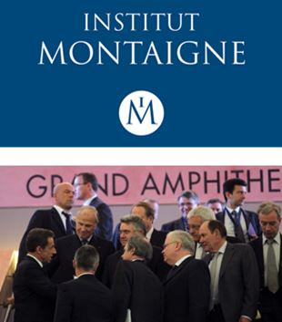
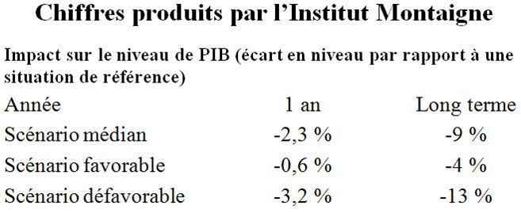
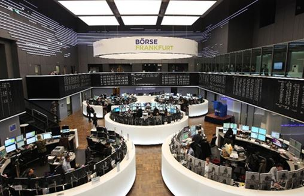

La question de la sortie de l’Euro commence à entrer dans le débat public, ce qui est une bonne chose. Mais, elle y entre à travers des articles qui font partie de ce que les britanniques avaient appelé le « projet Peur » (ou Project Fear) lors du débat sur le BREXIT, c’est à dire des articles visant à effrayer l’électeur en lui décrivant des scénarios apocalyptiques. Le cas du BREXIT est d’ailleurs intéressant car les différents auteurs de ce « projet Peur » ont dû reconnaître que leurs prévisions étaient très exagérées. Dans le cas de l’Euro, ce « projet Peur » a trouvé une première réalisation avec l’étude réalisée par l’Institut Montaigne1, un « Think Tank » où l’on retrouve le Président d’AXA, qui soutient largement la candidature de François Fillon. Il est ici intéressant de constater que cette étude prend le contre-pied direct non seulement de travaux réalisés par des organisations internationales (comme le FMI) mais aussi de très nombreux économistes internationalement reconnus.
Or, cette étude relève très largement de la désinformation. Sans procéder à une étude systématique, on va montrer pourquoi dans les lignes qui suivent.
Cette note présente un bilan désastreux de la sortie de l’Euro, bilan qui est en contradiction avec d’autres études2. Il prévoit en particulier une forte récession dans le cas de cette sortie de l’Euro.
Il convient de regarder quelles sont les hypothèses sur lesquelles se fondent cet Institut pour « produire » de tels chiffres.
Une dépréciation du taux de change de 20 % ?
Rien ne vient étayer ce chiffre d’une dépréciation de 20 % de la valeur du franc retrouvé une fois la sortie de l’Euro effectuée. En fait, une étude autrement plus sérieuse réalisée par le Fond Monétaire International montre que l’Euro sous-évalue les coûts pour l’Allemagne d’environ 15 % (autrement dit la monnaie allemande est sous-évaluée) quand, dans le même temps, il surévaluait ces mêmes coûts de 6 % pour la France3. L’écart de compétitivité est donc de 21 % (et pour l’Italie, sans doute d’au-moins 25 %). Si la France décidait de sortir de l’Euro, il est évident que l’Italie l’imiterait dans les jours, voire les semaines, qui suivent. De fait, la situation de l’Italie est à ce point tragique que le problème d’une sortie de l’Euro y est posé en dehors de toute référence à la France4. La sortie quasi-simultanée de la 2ème et de la 3ème économie de la zone Euro marquerait la prééminence de l’Allemagne dans l’euro « maintenu » ce qui provoquerait une très forte réappréciation de cet euro-là, sans doute largement supérieure à 15 %. Des estimations montrent en effet que le taux de change du Deutsch Mark devrait être à 1,35 voire 1,40 dollars alors que l’Euro est actuellement entre 1,06 et 1,08 dollars.
Si une dépréciation du Franc survient, il convient donc toujours de préciser par rapport à quelle monnaie elle devrait se produire. La dépréciation du Franc par rapport au dollar des Etats-Unis ne devrait-elle pas être supérieure à 5 %. Or, c’est en dollar que sont libellées les importations les plus nécessaires à l’économie française, l’énergie (le pétrole et le gaz) mais aussi les autres matières premières.
La sortie de la France de l’Euro provoquerait mécaniquement une hausse de la monnaie allemande, et ce quel que soit son nom. Cela signifie que les produits français deviendraient bien plus compétitifs que ce soit sur le marché intérieur, sur le marché allemand ou sur les marchés d’exportations, face aux produits allemands. Cela veut aussi dire, comme dans le cas d’Airbus-Industrie, que les industriels auraient intérêt à rapatrier en France des productions qui sont aujourd’hui faites en Allemagne. Tout cela montre que la sortie de l’Euro aurait des effets positifs et non négatifs sur l’économie française.
La sortie de l’Euro entraînerait-elle une forte hausse de l’inflation ?
Le calcul est ici fort simple. La consommation des ménages contient environ 45 % de produits importés. Sur ces 45 %, un tiers (12 %) sont importés d’Allemagne, 20 % de la zone Dollar et le reste (13 %) des autres pays de la zone Euro. Si l’on admet que le taux de change du Franc se déprécie de 15 % par rapport à l’Allemagne, de 5% par rapport au Dollar, et soit constant avec les autres pays (en fait il s’appréciera par rapport à la Lire italienne…), on arrive à un surcroît d’inflation de 2,8 % l’année de sortie. Comme le taux d’inflation est aujourd’hui de 1,3%, cela donne, pour l’année de sortie, une hausse de l’inflation de 4,1 %.
Par rapport à la zone Dollar, dont le taux d’inflation est lui-même de 2% environ, cela ne fait qu’une hausse relative de l’inflation française de 2,1 %, soit inférieure à la dépréciation du Franc par rapport au Dollar. L’inflation par rapport à l’Allemagne sera, quant à elle de 3,7% environ, ce qui laisse un fort gain par rapport à la dépréciation envers ce pays, dont on rappelle qu’elle est ici estimée à 15 %.
La hausse de l’inflation sera donc modérée et surtout largement confinée à la première année après la sortie de l’Euro. Rappelons ici que les études sur les grandes dépréciations des taux de change montrent que les hausses d’inflation sont comprises entre le quart et le tiers de la dépréciation. Le pays qui laisse sa monnaie se déprécier est toujours largement gagnant en matière de compétitivité relative. C’était d’ailleurs le résultat auquel nous avaient conduits les calculs faits dans l’étude de 20135.
La sortie de l’Euro entraînerait-elle une hausse des taux d’intérêt ?
La sortie de l’Euro va confronter les détenteurs de dettes françaises, émises depuis le territoire français, à un risque de change pour les dettes existantes. Par ailleurs, pour ce qui est de la situation de l’Etat et des acteurs privés, une étude postée sur le site de l’OFCE montre qu’elle s’améliore après la sortie de l’Euro6.
Quant à la situation pour les taux d’intérêts, il convient de rappeler la situation actuelle. Nous sommes en présence d’un excès de liquidité à l’échelle mondiale. Ces liquidités souhaiteront s’investir dans des titres allemands, ne serait-ce qu’en raison de l’appréciation de la monnaie allemande. Mais, l’Allemagne émet relativement peu de titres (au regard du besoin de placement des investisseurs). Elle est très loin d’épuiser la demande de titre. Quant aux Etats-Unis, leurs marchés d’actions sont déjà très chers et la perspective d’un resserrement de la politique du crédit de la Réserve Fédérale va faire en réalité baisser le marché obligataire.
Dans cette situation, la France restera attractive pour les investisseurs internationaux, ce qui devrait limiter la hausse des taux d’intérêts. Mais, c’est aussi oublier que le gouvernement français a une autre corde à son arc. En rétablissant un mécanisme connu sous le nom de « plancher des effets publics », il peut contraindre les banques opérant en France (qu’elles soient françaises ou non) à acheter des titres de dettes émis par le secteur public. Ce simple mécanisme, très utilisé dans les années 1950, 1960 et 1970, a pour effet de faire baisser automatiquement les taux d’intérêts.
On constate alors que rien dans la situation future ne vient corroborer l’hypothèse de l’Institut Montaigne d’une forte hausse des taux d’intérêts. Cette hypothèse, qui est pourtant centrale dans son raisonnement, apparaît au mieux comme une prédiction « au doigt mouillé » au pire comme une désinformation pure et simple.
Y aura-t-il une diminution des dépenses publiques et des hausses d’impôts ?
La malhonnêteté intellectuelle des auteurs de l’étude de l’Institut Montaigne se révèle ici de manière éclatante. On l’a dit, la question des dettes ne se pose pas. Par contre, du fait des gains de compétitivité l’économie française connaitra un surcroît de croissance de 1,5 % à 3 % (dont une croissance de 2,6% à 4,1%). Cette croissance va mécaniquement accroître les recettes de l’Etat, mais elle va aussi diminuer le nombre des demandeurs d’emplois, nombre que l’on peut estimer aujourd’hui à 4,6 millions pour les chômeurs « stricto sensu ». Cette baisse pourrait atteindre de 1,5 millions à 2,5 millions dans les trois ans qui suivent la sortie de l’Euro. Même en prenant l’hypothèse la plus pessimiste (1,5 millions), ce retour au travail d’une grande partie des chômeurs équilibrerait les comptes sociaux. Autrement dit nous aurons simultanément :
Une hausse des recettes.
Une baisse des dépenses.
La question se pose de savoir à quoi sera utilisé cet excédent favorable. L’étude déjà citée réalisée en 2013 montrait que si on donnait la priorité à la réduction des déficits, ces derniers paradoxalement se réduiraient moins vite que si on donnait la priorité aux investissements, en sachant que chaque franc investi dans les infrastructures par le secteur public engendre un investissement important du secteur privé.
Donc, non seulement il n’y aurait pas de hausses d’impôts, mais ces derniers pourraient même baisser dès la deuxième année après la sortie, du fait de l’effet positif sur l’emploi. La situation des entreprises s’améliorant du fait (a) des gains de compétitivité issu de la dépréciation monétaire et (b) de la baisse des cotisations sociales des employeurs du fait d’un retour massif vers l’emploi, on ne peut que conseiller au gouvernement de cibler les ménages pour les baisses d’impôts, donnant du pouvoir d’achat à ces derniers.
Y aura-t-il une diminution de la productivité des facteurs suite à la diminution très importante des marchés à l’exportation ?
On constate qu’en réalité, l’économie française connaitra une forte croissance. Cette croissance devrait s’accompagner d’un effort d’investissement, tant de l’Etat que du secteur privé, qui verrait les conditions de production d’améliorer en France. Le résultat serait donc exactement l’inverse des prédictions de l’Institut Montaigne, avec une forte hausse de la productivité des facteurs dans les années qui suivront la sortie de l’Euro, hausse de la productivité dont les effets viendront au bout de quelques années relayer l’impulsion initiale que la dépréciation du taux de change aura créée.
On le voit, l’analyse macroéconomique montre que les effets d’une sortie de l’Euro, loin d’être catastrophiques et loin d’être conformes aux prévisions de l’Institut Montaigne, un institut qui décidément porte mal son nom tant il est vrai que son discours reflète l’idéologie la plus réactionnaire et non la raison, sont très positifs. Cela ne veut pas dire que TOUS les problèmes seront résolus ou que des nouveaux problèmes ne se profileront pas à l’horizon. Mais, cela implique que nous serons dans une situation bien plus favorable que si nous étions restés dans l’Euro pour les affronter.
Partager cette page